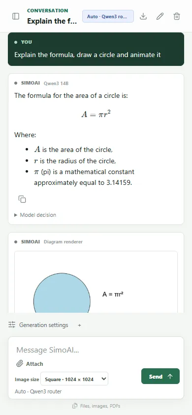

New
SimoAI
A private AI assistant that runs entirely on my own PC. It chats, writes code, reads PDFs, looks at images and generates pictures and short videos. A router model decides which specialist handles each part of a request.
- 6
- local models, coordinated by one router
- 16 GB
- of GPU memory. Every model choice had to fit it
- 52/65
- hidden test groups passed by the local coding model
Built with an AI coding agent (Codex). I was the product owner and tester: I chose every feature and reported every failure.
- Node.js
- Ollama
- ComfyUI
- Qwen3
- Gemma 3
- FLUX
- Wan 2.2
- IndexedDB
Runs locally · not deployed